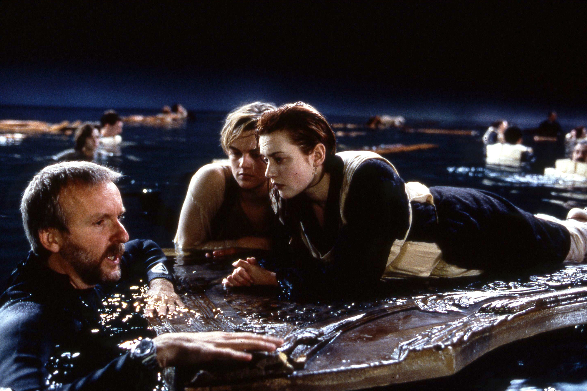

<ng-container *ngIf="prediction">
	<clr-modal [(clrModalOpen)]="opened" (clrModalOpenChange)="onClose()" [clrModalStaticBackdrop]="false">
		<div class="modal-title">
			<h3>You {{prediction.result}} with a chance of {{prediction.chance}}</h3>
		</div>
		<div class="modal-body">
			
      
      </div>
      <div class="modal-footer">
        <button type="button" class="btn btn-primary" (click)="onClose()">Close</button>
      </div>
  </clr-modal>
</ng-container>
